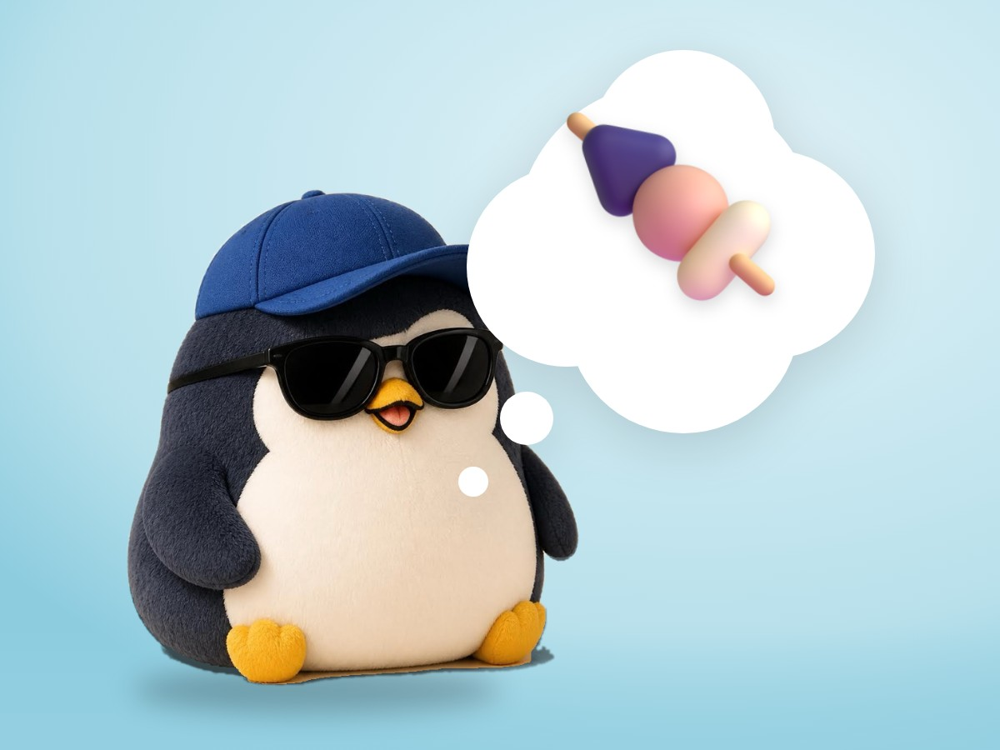

📝 DRAFT · 下書き — まだ本番に出していません · 下書き一覧
🐧 EVERYDAY LIFE⚡ 19 SEC
Doing too many things makes days boring, so do fewer things deeply 🍢

Boring Days
It seems 1 reason for boring days is doing too many kinds of things.
2 Yakitori Eaters
One person slowly grills yakitori, and one eats store yakitori while looking at a phone.
It seems the first person has a richer time.
⚡ TRY IT
Grill 1 yakitori
Turn it 6 times. Then try "everything at once" and compare the fun.
😋 Fun🤍🤍🤍🤍🤍🤍
Smell the smoke. Hear the sizzle.
🔥 Sizzle… What a nice smell!
👀 Eyes on the phone… The yakitori is just there.
🍢 Juicy and smoky! I will remember this taste.
🤔 Wait… what did I just eat?
Trips Too
Trips are also more fun when you choose fewer places and enjoy them slowly.
Fewer, Deeper
Fewer things, more deeply.
📚 I learned this from the Japanese blog "Panda no Ondo".